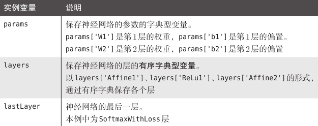
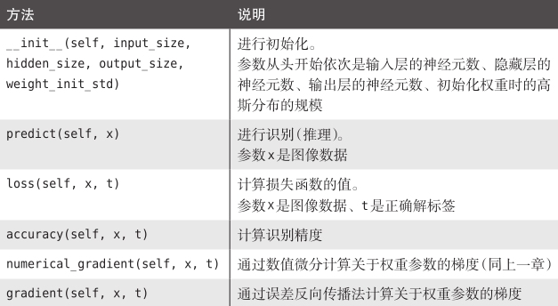

计算图
计算图将计算过程用图形表示出来。这里说的图形是数据结构图，通过多个节点和边表示（连接节点的直线称为“边”）。
各个节点处只需进行与自己有关的计算（在这个例子中是对输入的两数字进行加法运算），不用考虑全局。
综上，计算图可以集中精力于局部计算。无论全局的计算有多么复杂，各个步骤所要做的就是对象节点的局部计算。虽然局部计算非常简单，但是通过传递它的计算结果，可以获得全局的复杂计算的结果。
链式反应

如图所示，反向传播的计算顺序是，将信号 E 乘以节点的局部导数 ，然后将结果传递给下一个节点。这里所说的局部导数是指正向传播中 y = f(x) 的导数，也就是 y 关于 x 的导数 。比如，假设，则局部导数为 。把这个局部导数乘以上游传过来的值（本例中为 E），然后传递给前面的节点。
简单层实现
乘法层
class MulLayer:
def __init__(self):
self.x = None
self.y = None
def forward(self,x,y):
self.x = x
self.y = y
out = x * y
return out
def backward(self, dout):
dx = dout * self.y #翻转x和y
dy = dout * self.x
return dx,dy
加法层
class AddLayer:
def __init__(self):
pass
def forward(self, x,y):
out = x + y
return out
def backward(self,dout):
dx = dout * 1
dy = dout * 1
return dx, dy
ReLU层
class Relu:
def __init__(self):
self.mask = None
def forward(self,x):
self.mask = (x <= 0)
out = x.copy()
out[self.mask] = 0
return out
def backward(self, dout):
dout[self.mask] = 0
dx = dout
return dx
Sigmoid层
class Sigmoid:
def __init__(self):
self.out = None
def forward(self, x):
out = 1 / (1 + np.exp(-x))
self.out = out
return out
def backward(self, dout):
dx = dout * (1.0 - self.out) * self.out
return dx
Affine层
神经网络的正向传播中进行的矩阵的乘积运算在几何学领域被称为“仿射变换”
class Affine:
def __init__(self, W, b):
self.W = W
self.b = b
self.x = None
self.dW = None
self.db = None
def forward(self, x):
self.x = x
out = np.dot(x, self.W) + self.b
return out
def backward(self, dout):
dx = np.dot(dout, self.W.T)
self.dW = np.dot(self.x.T, dout)
self.db = np.sum(dout, axis=0)
return dx
Softmax-with-Loss层
神经网络中进行的处理有推理（inference）和学习两个阶段。神经网络的推理通常不使用 Softmax 层，而是将最后一个 Affine 层的输出作为识别结果。当神经网络的推理只需要给出一个答案的情况下，因为此时只对得分最大值感兴趣，所以不需要 Softmax 层。不过，神经网络的学习阶段则需要 Softmax 层。
考虑到这里也包含作为损失函数的交叉熵误差（cross entropy error），所以称为“Softmax-with-Loss层”
简易版：
class SoftmaxWithLoss:
def __init__(self):
self.loss = None # 损失
self.y = None # softmax的输出
self.t = None # 监督数据(one-hot vector)
def forward(self, x, t):
self.t = t
self.y = softmax(x)
self.loss = cross_entropy_error(self.y, self.t)
return self.loss
def backward(self, dout=1):
batch_size = self.t.shape[0]
dx = (self.y - self.t) / batch_size
return dx
反向传播实现


将神经网络的层保存为OrderedDict 这一点非常重要。OrderedDict 是有序字典，“有序”是指它可以记住向字典里添加元素的顺序。因此，神经网络的正向传播只需按照添加元素的顺序调用各层的 forward() 方法就可以完成处理，而反向传播只需要按照相反的顺序调用各层即可。
import numpy as np
import matplotlib.pyplot as plt
from collections import OrderedDict
class Relu:
def __init__(self):
self.mask = None
def forward(self,x):
self.mask = (x <= 0)
out = x.copy()
out[self.mask] = 0
return out
def backward(self, dout):
dout[self.mask] = 0
dx = dout
return dx
def cross_entropy_error(y,t):
delta = 1e-7
return -np.sum(t * np.log(y + delta))
def softmax(x):
c = np.max(x)
exp_x = np.exp(x-c)
sum_exp_x = np.sum(exp_x)
y = exp_x / sum_exp_x
return y
class SoftmaxWithLoss:
def __init__(self):
self.loss = None # 损失
self.y = None # softmax的输出
self.t = None # 监督数据(one-hot vector)
def forward(self, x, t):
self.t = t
self.y = softmax(x)
self.loss = cross_entropy_error(self.y, self.t)
return self.loss
def backward(self, dout=1):
batch_size = self.t.shape[0]
dx = (self.y - self.t) / batch_size
return dx
def numerical_gradient(f,x):
h = 1e-4
grad = np.zeros_like(x)
it = np.nditer(x,flags=['multi_index'],op_flags=['readwrite'])
while not it.finished:
idx = it.multi_index
val = x[idx]
x[idx] = float(val) + h
fxh1 = f(x)
x[idx] = val - h
fxh2 = f(x)
grad[idx] = (fxh1-fxh2) / (2*h)
x[idx] = val
it.iternext()
return grad
class Affine:
def __init__(self, W, b):
self.W = W
self.b = b
self.x = None
self.dW = None
self.db = None
def forward(self, x):
self.x = x
out = np.dot(x, self.W) + self.b
return out
def backward(self, dout):
dx = np.dot(dout, self.W.T)
self.dW = np.dot(self.x.T, dout)
self.db = np.sum(dout, axis=0)
return dx
class TwoLayerNet:
def __init__(self, input_size, hidden_size, output_size,weight_init_std=0.01):
# 初始化权重
self.params = {}
self.params['W1'] = weight_init_std * \
np.random.randn(input_size, hidden_size)
self.params['b1'] = np.zeros(hidden_size)
self.params['W2'] = weight_init_std * \
np.random.randn(hidden_size, output_size)
self.params['b2'] = np.zeros(output_size)
# 生成层
self.layers = OrderedDict()
self.layers['Affine1'] = Affine(self.params['W1'],self.params['b1'])
self.layers['Relu1'] = Relu()
self.layers['Affine2'] = Affine(self.params['W2'],self.params['b2'])
self.lastlayer = SoftmaxWithLoss()
def predict(self, x):
for layer in self.layers.values():
x = layer.forward(x)
return x
# x:输入数据, t:监督数据
def loss(self, x, t):
y = self.predict(x)
return self.lastlayer.forward(y, t)
def accuracy(self, x, t):
y = self.predict(x)
y = np.argmax(y, axis=1)
if t.ndim !=1 :
t = np.argmax(t, axis=1)
accuracy = np.sum(y == t) / float(x.shape[0])
return accuracy
# x:输入数据, t:监督数据
def numerical_gradient(self, x, t):
loss_W = lambda W: self.loss(x, t)
grads = {}
grads['W1'] = numerical_gradient(loss_W, self.params['W1'])
grads['b1'] = numerical_gradient(loss_W, self.params['b1'])
grads['W2'] = numerical_gradient(loss_W, self.params['W2'])
grads['b2'] = numerical_gradient(loss_W, self.params['b2'])
return grads
def gradient(self, x, t):
# forward
self.loss(x,t)
# backward
dout = 1
dout = self.lastlayer.backward(dout)
layers = list(self.layers.values())
layers.reverse()
for layer in layers:
dout = layer.backward(dout)
# 设定
grads = {}
grads['W1'] = self.layers['Affine1'].dW
grads['b1'] = self.layers['Affine1'].db
grads['W2'] = self.layers['Affine2'].dW
grads['b2'] = self.layers['Affine2'].db
return grads
参数更新
from mnist import load_mnist
(x_train,y_train),(x_test,y_test) = load_mnist(normalize=True,one_hot_label=True)
network = TwoLayerNet(input_size=784,hidden_size=50,output_size=10)
iters_num = 10000
train_size = x_train.shape[0]
batch_size = 100
learning_rate = 0.1
train_loss_list = []
train_acc_list = []
test_acc_list = []
iter_per_epoch = max(train_size / batch_size, 1)
for i in range(iters_num):
batch_mask = np.random.choice(train_size,batch_size)
x_batch = x_train[batch_mask]
t_batch = y_train[batch_mask]
##
grad = network.gradient(x_batch, t_batch)
# 更新
for key in ('W1','b1','W2','b2'):
network.params[key] -= learning_rate * grad[key]
loss = network.loss(x_batch, t_batch)
train_loss_list.append(loss)
if i % iter_per_epoch == 0:
train_acc = network.accuracy(x_train, y_train)
test_acc = network.accuracy(x_test, y_test)
train_acc_list.append(train_acc)
test_acc_list.append(test_acc)